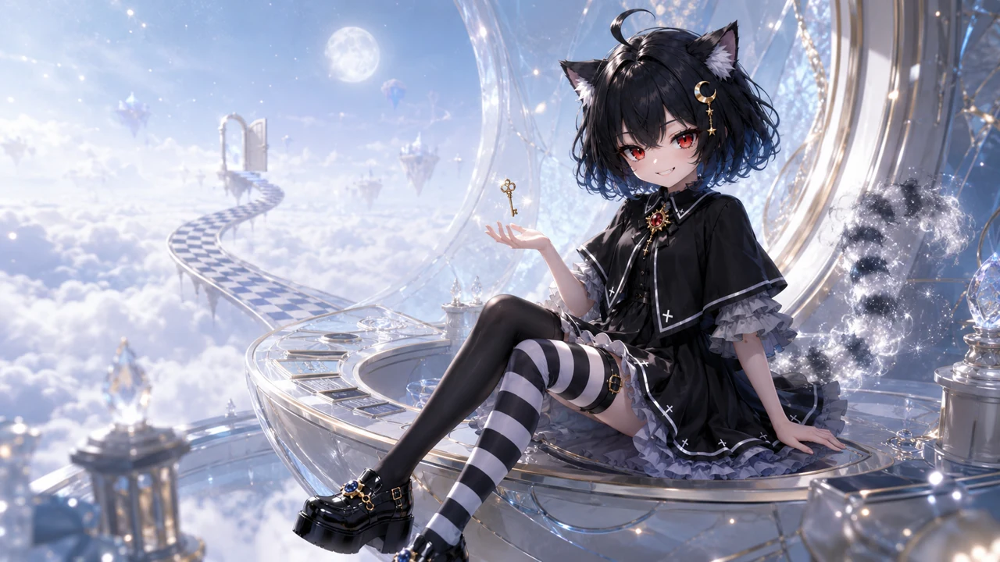

CHESHIRE PROTOCOL / 00-25
夜希 NYXIE
梦境导航员 · 柴郡猫的不可靠继承者
她不负责带你走出仙境。
她只负责让迷路变得值得。
RED EYES ONLINE
GOLDEN KEY FOUND
REALITY UNSTABLE
NYXIE IS WATCHING
READY / 00
01 / CHARACTER PROFILE
WHO IS SMILING
IN THE DARK?
角色档案
夜希是一道留在门缝里的笑。她借用了柴郡猫的直觉、好奇与恶作剧， 在现实和梦境之间替每个迷路的人保管一把错误的钥匙。
NX-025ACCESS GRANTED
NYXIE 夜希
02 / WONDERLAND RULES
这里的路
从不负责抵达
THE WORLD BENDS WHEN SHE SMILES.
门不通往房间
每一扇门都通往另一种可能，钥匙只负责让你下定决心。
路会在回头时改变
棋盘格从不说谎，只是你每次看见的答案都不一样。
笑容比本体停留更久
当夜希消失，最后离开的永远是那双红眼和一颗小虎牙。
03 / MOTION ARCHIVE
选择一种
疯狂方式
每段表演都从同一个瞬间开始，但没有人能保证她会如何结束。
04 / THE LAST DOOR
你确定要
你确定要
继续往下掉吗？
答案不重要。重要的是，你已经把手放在门把上了。